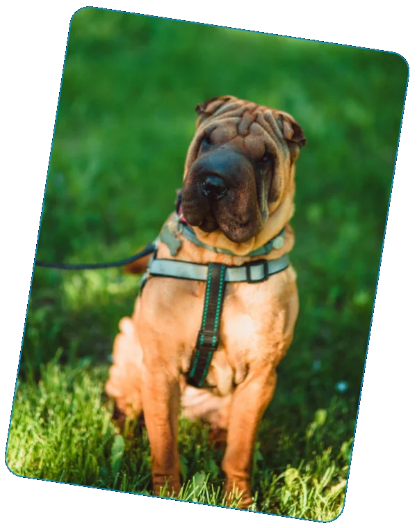

2026 · G8 Creative Awards · Silver
Career Jungle · AI Video · Setka
source: sostav.ru / G8 winners ↗



role: senior art director
it's easy to get lost or go unnoticed in the career jungle. for setka, a professional networking platform by hh.ru, we created a campaign about making connections and finding your way forward. the challenge was to make the brand more relevant to IT, digital and creative professionals on a limited budget.
the visual concept transforms everyday workplaces into a jungle. coffee waterfalls, walls of keyboards, an HR leopard and offices overgrown with vegetation. through this world, we explored three things setka helps people do: connect, share their experience and discover something new.
[ SELECTED AWARDS ]
[ PRESS / FEATURES ]
[ end of archive / looping ]